1. 부분 전체 분석
(1) 누적 막대 차트
단순 합계
- 연도별 고객 세그먼트의 매출에 대한 막대 차트 그리기
- step1. 매출액을 뷰에 등록 후, 고객 세그먼트를 색상과 텍스트 마커에 등록, 오름차순 정렬
- step2. 주문 일자 필드를 추가해 연도별 매출액 산출
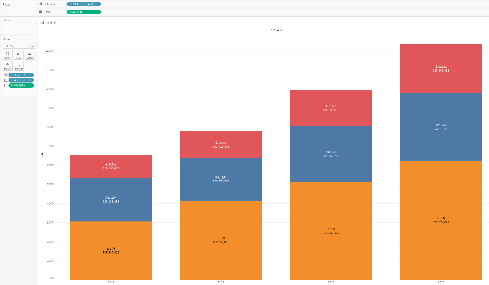
비중 계산
- 아래와 같이 선택
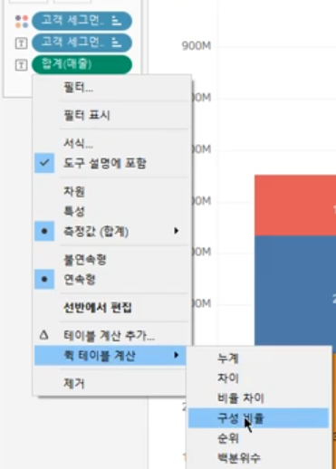
- 그러나 위 같은 경우 전체 매출에 대한 각 부분의 비율이므로 각 연도별 매출을 100으로 한 고객 세그먼트별 비율을 파악할 수 없다
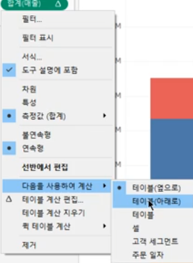
- 위와 같이 옵션 설정을 하면!
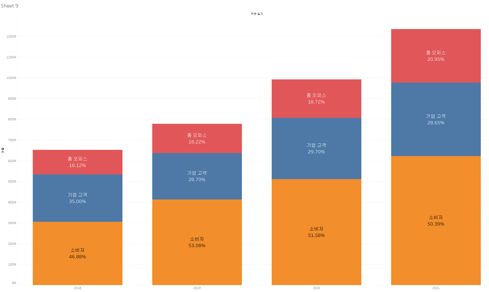
- 근데 뭔가 왼쪽에 있는 축도 퍼센트로 나타내면 좋을 것같다.
- 근데 별거 없다. 위의 과정을 마크가 아닌 행에서 하면된다. 결과를 보면~~
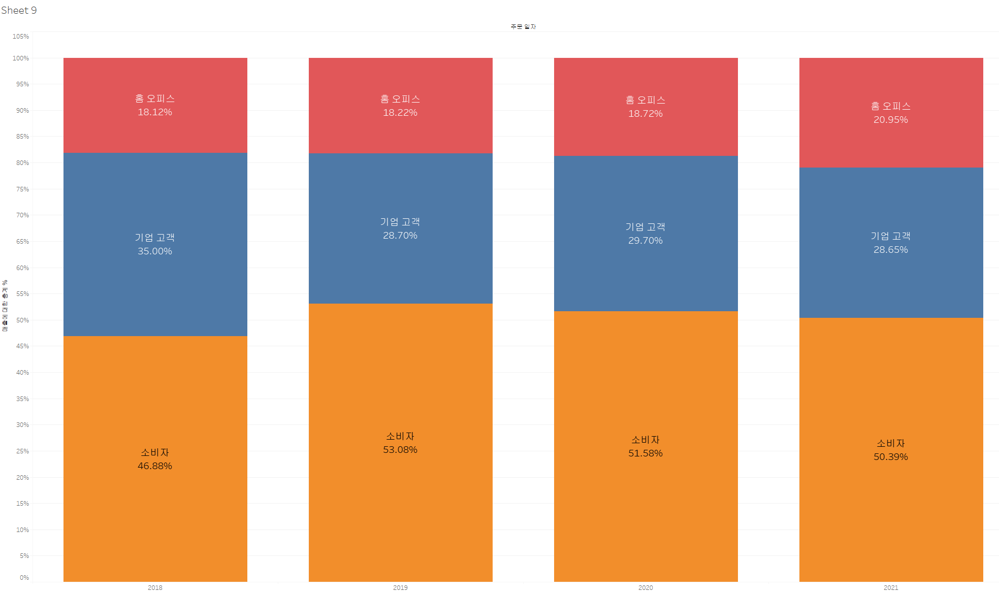
- 그러나 데이터 시각화 수업에서 배웠듯이 퍼센트는 절대적인 수치가 아니기 때문에 결과해석에 오류를 불러 일으킬 수 있다.
- 매출 합계를 텍스트 마커에 추가하자!
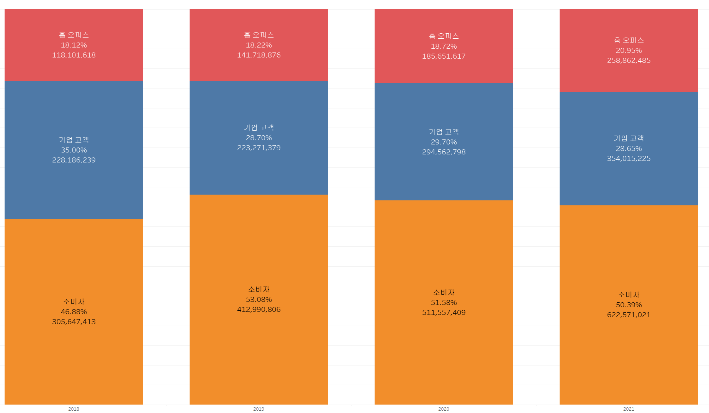
(2) 파이차트
- 파이차트에서 내림차순은 시계방향 정렬이다.
- 고객 세그먼트별 비중 계산 \(\Delta\)
- 파이차트 생성 법 : 고객 세그먼트 클릭 \(\to\) 매출 클릭 \(\to\) 파이차트 선택 (So easy~)
- 내가 선택한 마커는 다음과 같다
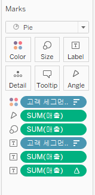
- 출력 결과를 살펴보면..
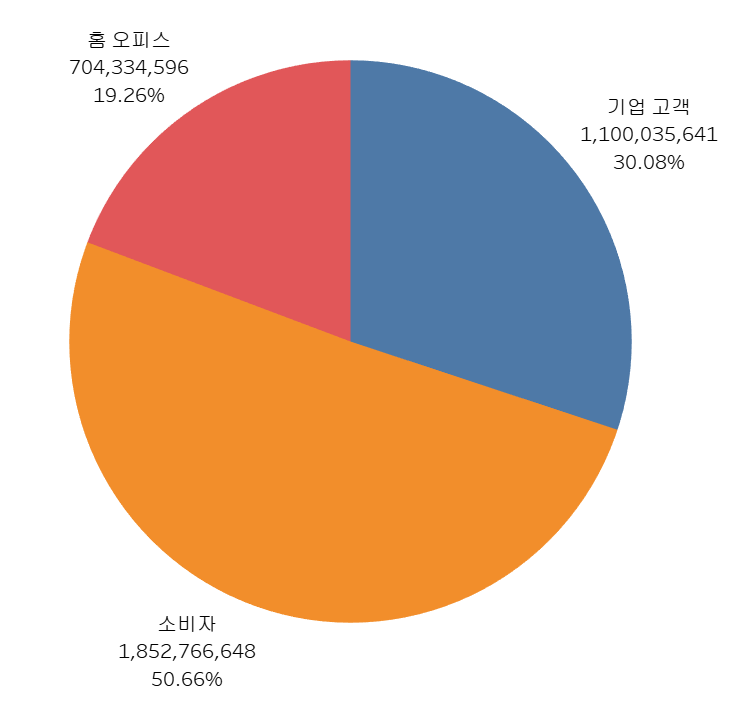
- 근데 먼가 좀 맘에 안듬 퍼센트는 괄호로 표시하고 싶음
- 일단 텍스트 우측 맨끝에 있는 점선 클릭
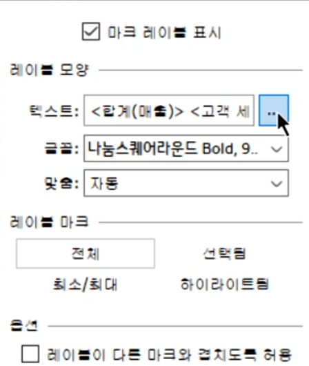
- 그 후 아래와 같이 편집
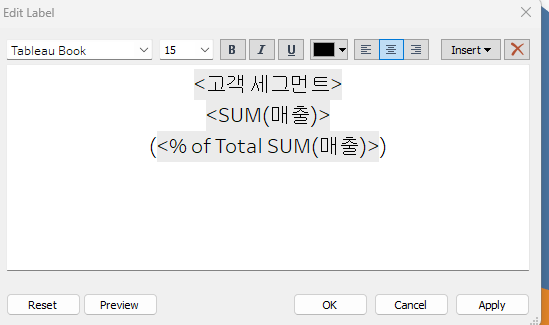
- 결과 확인
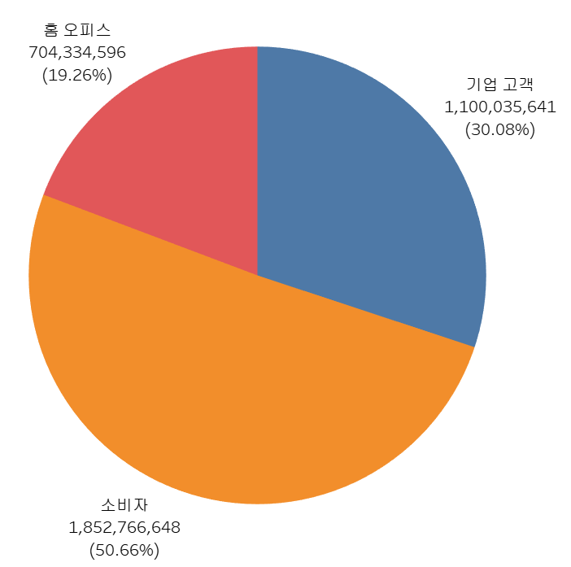
- 이것을 연도별로 보자 \(\to\) 연도를 뷰에 넣으면 테이블 아래로가 아닌 테이블 옆으로 설정이 되어 있으므므로 변환해주자
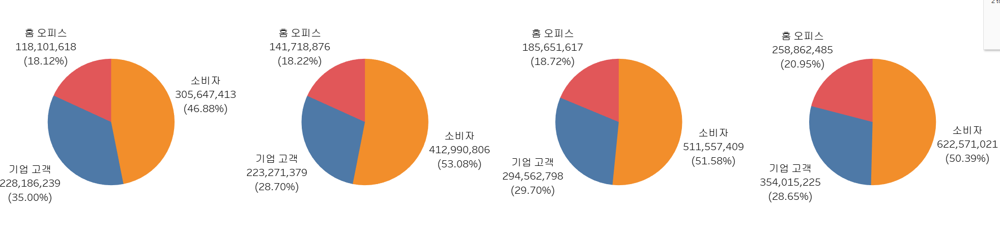
(3) 도넛차트
- 파이 차트에서 가지지 못하는 요약정보를 표시할 수 있다
- step1. 일단 열선반에 0을 하나 씀(임의의 필드를 하나 만든것임) 그러면 뷰에 의미심장한게 만들어짐
- step2. 기본 데이터 차트를 파이로 변경
- step3. 임의로 만든 필드를 열선반에 하나 더 추가
- step4. 천번째 합계 0의 마커에 고객 세그먼트 추가
- step5. 정렬 시 메뉴바에 있는 정렬보다 마커에 있는 정렬을 이용해서 정렬하자(고객세그먼트에 있음)
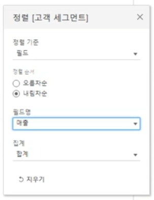
- step6. 이중 축 추가 \(\to\) 열 선반에 있는 두 번째 합계에서 Dual axis 선택!
- step7. 머리글 표시 해제
- step8. view \(\to\) format line \(\to\) column \(\to\) 격자선과 0표시선 none으로 변경
- step9. 매출을 합계2 마커에 레이블에 넣기 후, 레이블 텍스트 편집
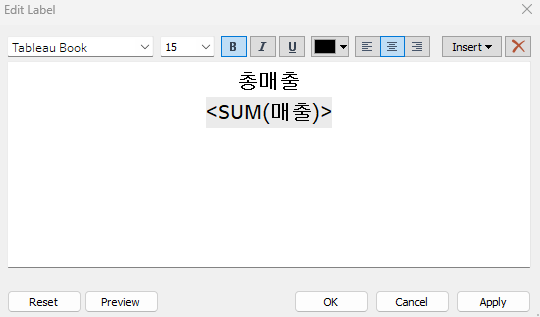
- step10. 합계 1에 마커에 매출을 레이블로 구성 비율 레이블로 표시
- step11. 연도 차원 추가
- step12. 그 후 마커 레이블 표현 방식을 테이블 다운으로 변경
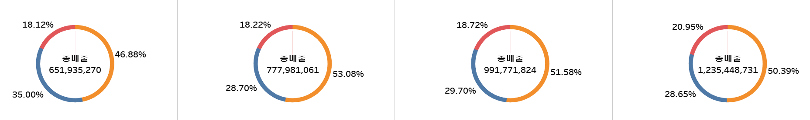
- 파이차트보다 좋은점 : 가운데에 종합적인 정보를 넣었다,
(4) 트리맵
- step1. 고객 세그먼트, 매출 클릭 후, 트리맵 생성
- step2. 뭐 그냥 입맛대로 마커 추가
(5) 파이차트와 도넛차트를 쓰면 안되는 경우
- 인접한 값들이 차이가 없는 경우 가급적 트리맵을 사용하는 것이 좋다!
Summay
- 파이차트와 도넛 차트는 각각의 범주가 어느 정도의 비율을 차지하는지 살펴볼 때 적절하다.
- 그러나 맴버가 많은 경우 트리맵을 대안으로 이용하자
2. 상관 관계 분석
(1). 분산형 차트
- 일반적으로 내가 생각하는 scatter plot인 것 같다.
- 그러니 당연히 열 선반과 행 선반의 측정값을 배치해야한다.
- 실제 시험문제 : 분산형 차트를 만들때 측정값은 최소 몇 개인가? \(\to\) 2개
사전 단계
- step1.할인율을 열에 합계 필드를 행으로 두고 할인율의 집계 방식을 평균으로 변경 (기본 속성에서 집계를 평균, 그리고 숫자 형식에서 소수점 2로 변경하면 15.0% 식으로 변경)
- step2. 고객명 세그먼트를 detail mark로 드래그
- step3. color mark에서 Opacity 70%로 수정
- step4. 수익을 색상 마크로 드래그 하면 0을 기준으로 파란색 오랜지로 나뉨
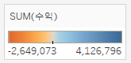
- step5. 분석 패널에서 추세선 삽입
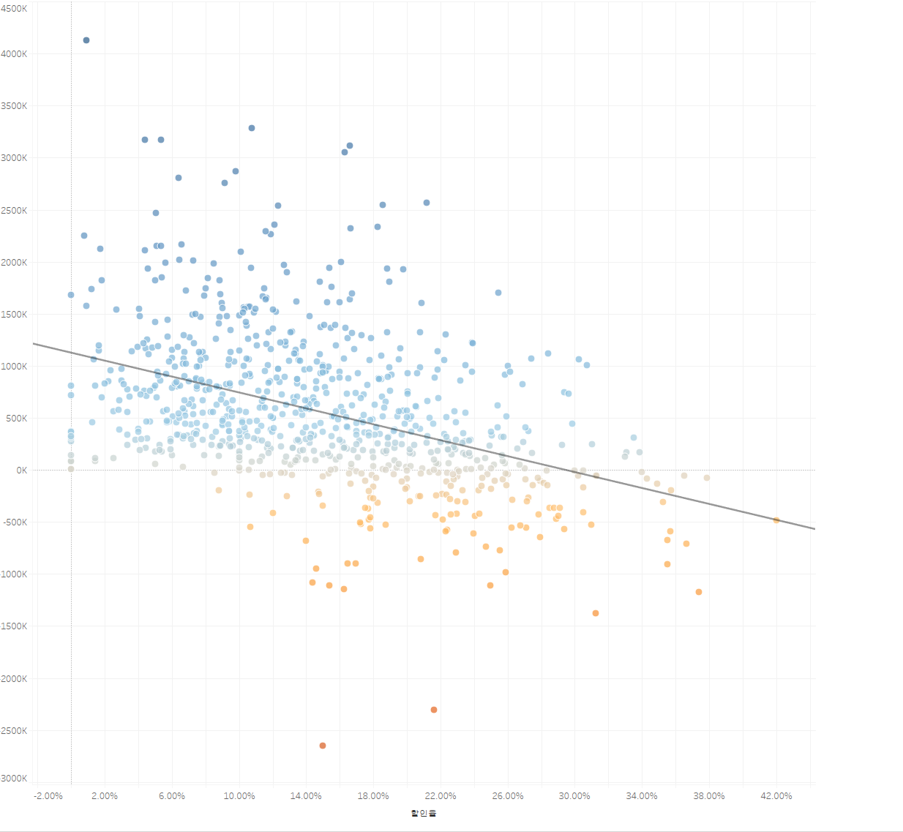
(2) 데이터 설명
- 문제가 되는 데이터
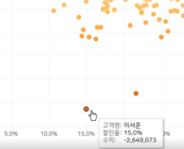
- 해당 데이터에 전구 모양 클릭 후 데이터를 살펴본 결과 -3백만원이라는 관측치 때문에 다음과 같은 상황이 발생한 것이다.
- 해당 데이터를 제거할 경우도 보여준다!
(3) 매개변수 적용
- step1. creat parameter 선택
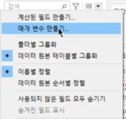
- step2. allow values는 Range, 최솟값 0, 최대값0.45, Step size 0.05 선택
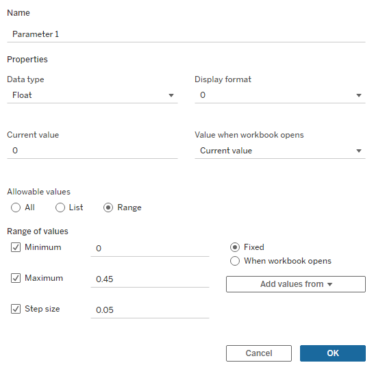
- step3. 수익에 대한 매개변수 생성
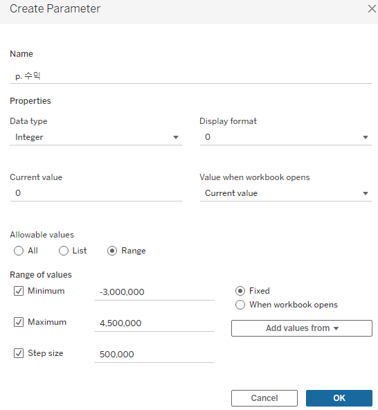
- step4. Parameters에서 show parameter 선택
- step5. 고객명에서 creat set을 클릭 후 다음과 같은 조건 생성
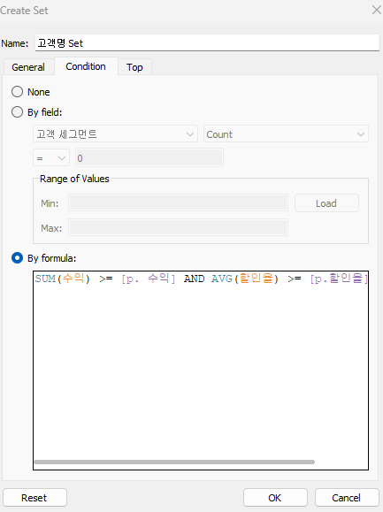
- 테이블의 고객명 set을 색상마커에 집어넣기
- 좀더 면밀하게 보기위해 참조선 추가 (value를 p.할인율 매개변수 선택)
- 수익에 대한 참조선도 p.수익으로 변경
- 수익과 할인율에 조건에 충족하는 고객들만 별도로 집합 만들어서 구별할 수 있다.(필터라구 생각)
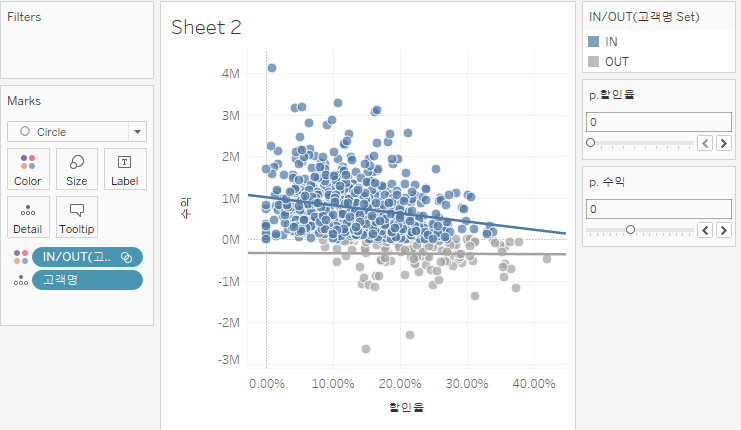
Summary
- 분산형 차트는 측정값 간의 관계를 파악하기 위한 시각화의 한 방식이다.
- 열 선반과 행 선반에 각각 측정값을 배치하면 자동적으로 분산형 차트가 만들어 진다.
- 열 선반과 행 선반에 올리는 필드는 고정적으로 배치가 가능하지만, 좀 더 자유도를 주고자 별도의 매개변수를 만들면 매개 변수 값에 따라 분산형 차트를 다양하게 활용할 수 있다.
3. 이중 축 vs 결합된 축
(1) 이중 축 (Dual axis)
a. 고객 세그먼트별 매출 표현
- 매출과 주문일자로 그래프 생성
- 매출을 한번더 행선반에 놓고 marker를 circle로 변경
- 이중 축 선택

- 합쳐진 결과를 보니 왼쪽과 오른쪽 축의 범위가 서로 다르다.
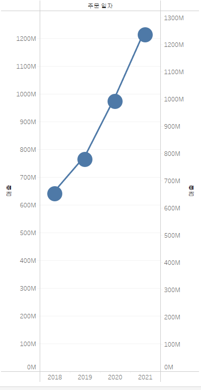
- 서로 다른 이유는 라인보다 원이 더커서 그런다 \(\to\) 축 아무대나 클릭 후 synchronize axis 누르면 끝~
- 그 다음 단위를 매출을 라벨로 쓰고 단위를 백만으로 변경!
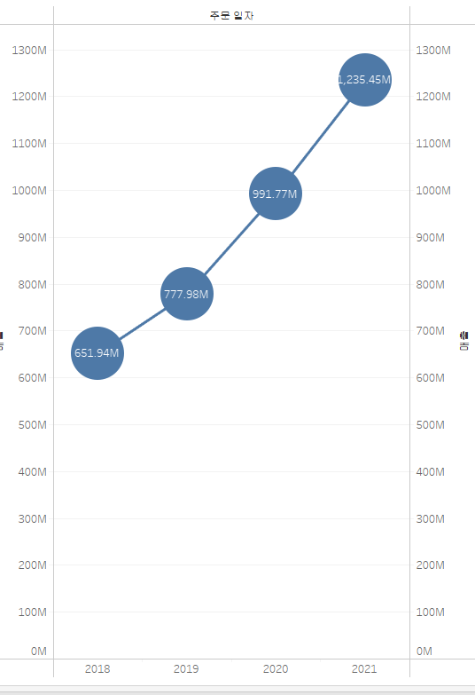
- 그 다음 전체 마커에 고객세그먼트를 색상 마커에 삽입
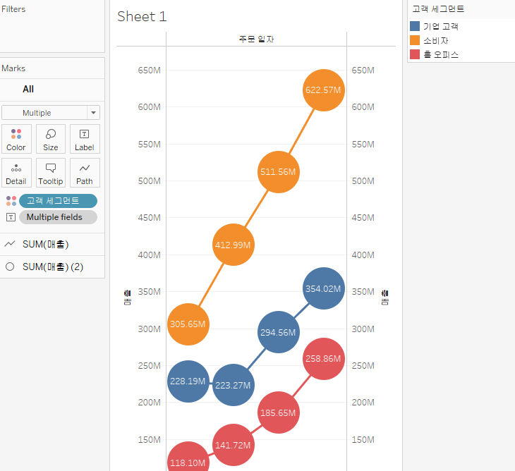
b. 누적막대차트 + 간트차트
- 매출과 주문일자를 이용하여 누적 막대 그래프생성
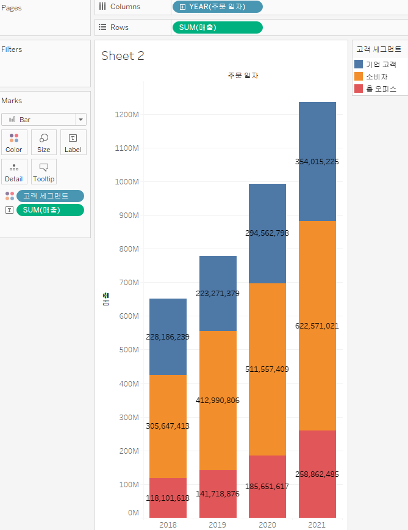
- 행 선반에 매출 필드를 하나 더 추가해 세그먼트 종합 차트도 추가
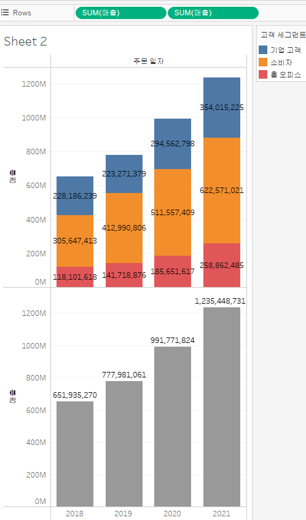
- 합계 매출 2번 마크를 간트로 변경
- 이중 축 선택 후 축 동기화 선택
- 합계 매출 2번 매출 글씨 키운 후 합계 매출 1번 마크에서 테두리 흰색 하이라이트 옵션 추가
- 주문일자 레이블 숨기기 수행 하단에 있는 연도를 상단에 표시
- step1
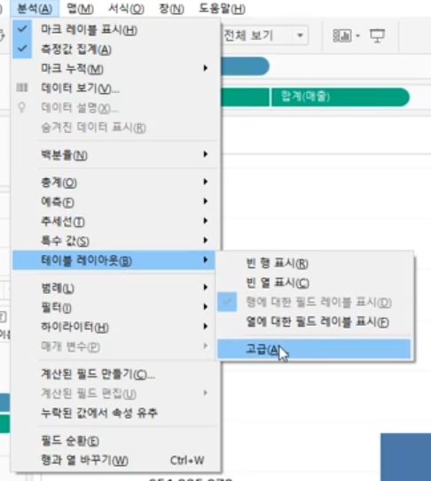
- step2 : Show inner~~~ 체크 해제
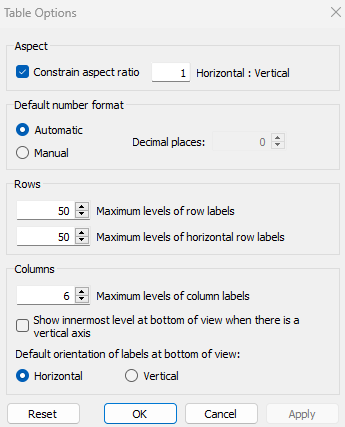
- 그다음 저번시간에 배운 것처럼 구성비율을 생성하자 (머 대충 요런식??)
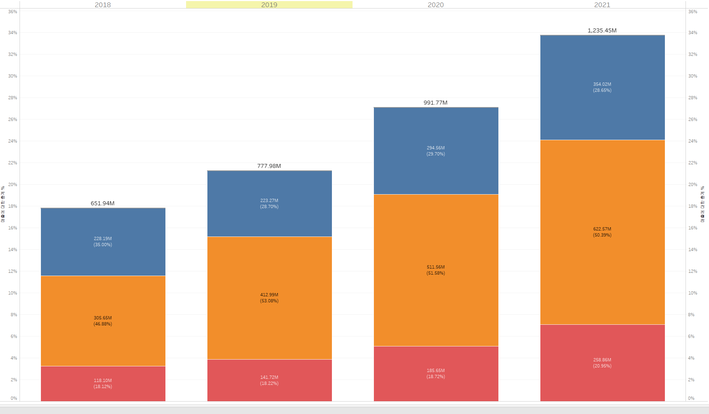
(2) 결합된 축(Combined Axis)
2020년과 2021년의 월별 축을 하나의 축으로 표현
- 열 선반에 주문인자 월별 넣기
- 계산된 필드 만들기를 이용하여 다음 과정을 수행
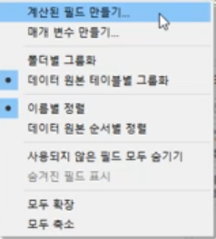
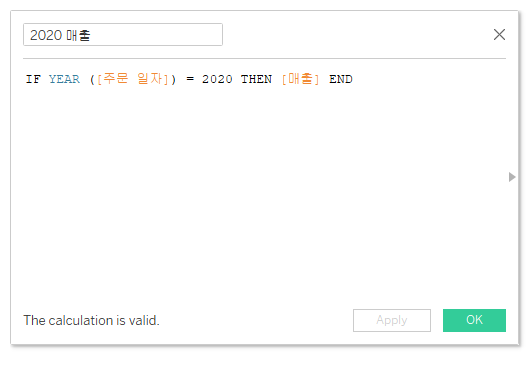
- 2021은 그냥 복사 후 편집
- 그 다음 만든 합계 2020 매출을 행 선반에 두고 생성된 축에 2021매출을 드래그
- step1
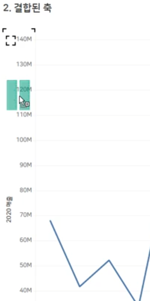
- step2
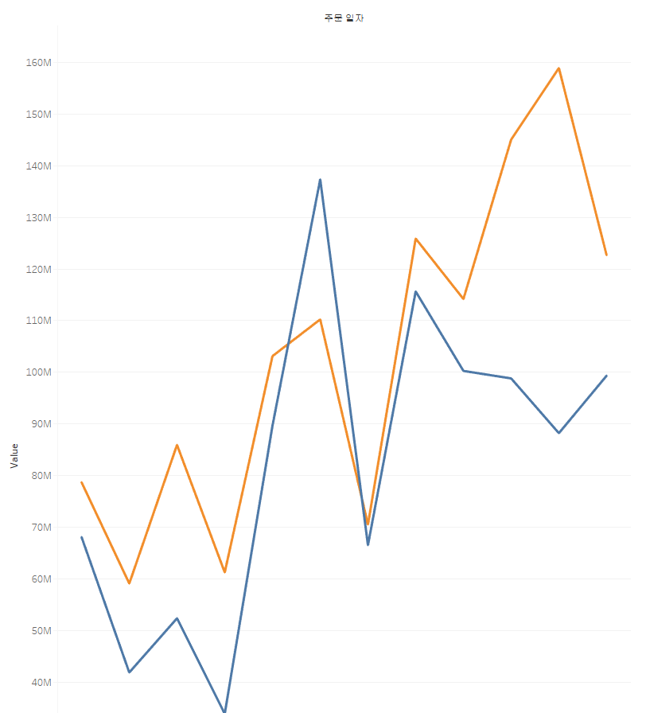
- 그 다음 뭐 알아서 맛있게
(3) 이중 축 & 결합된 축 동시 적용
- 행 시도, 열 매출
- 서울, 경기도, 제주도를 볼건데.. 제주도의 매출이 너무 적으므로 서울과 경기도는 같은 축(결합축), 제주도는 다른 축을 사용(이중축)
- 주문일자에서 연속형 분기 선택 후 계산된 필드 만들기를 선택해 다음과 같은 메소드 반복
- IIF([시도] = “서울특별시”, [매출], NULL )
- 그 다음 생성한 필드를 경기와 서울은 같은 축(결합축), 제주는 드래그해서 오른쪽 축에 드랍(이중축)
- 가독성 진짜 개별로임 난 죽어도 안쓸듯
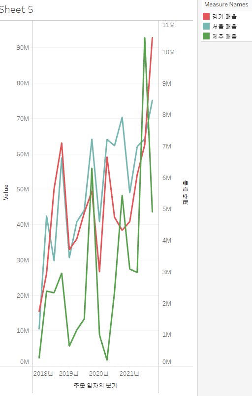
Summary
- 이중축은 하나의 뷰안에서 축을 이중으로 써서 차트를 만드는 경우이며 이중 축은 마크를 서로 다르게 구성이 가능하다!
- 반면, 결합된 축은 하나의 뷰에서 같은 축을 결합 또는 공유하는 케이스이며 결합된 축은 마크가 동일하게 구성되어야 한다.
4. 그룹 vs 집합
(1) 그룹
- 항목내 멤버들을 묶어줌
example 1
- 시도 필드 우클릭 \(\to\) create group \(\to\) (경기도, 서울특별시, 인천광역시) 수도권으로 그룹 나머지는 기타
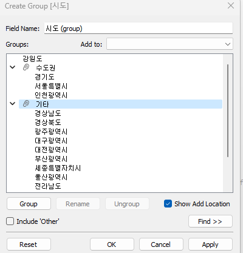
- 행은 매출, 열은 연속형 분기 주문일자 선택
- 그 후 색상은 시도, 그리고 분기 주문일자를 discrete로 변경
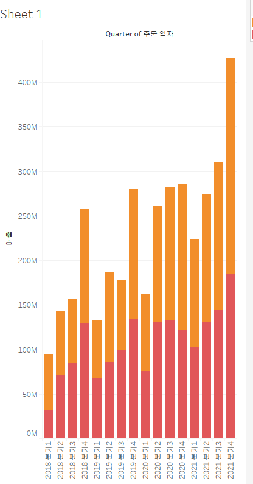
- 각 연분기 기준으로 수도권과 기타 지역의 매출 비중을 살펴보자
- 행 선반에 매출에서 구성비율 선택, 그 후 테이블 계산을 아래로 변경, 그 후 컨트롤 + 드래그로 행선반에 있는 매출을 마크의 레이블로 드래그
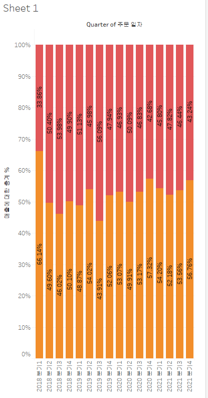
- 분석 패널에서 상수라인을 추가 열 축 이름 우클릭 후 점선 편집 \(\to\) 별거없음
- 색상에서 원하는 색으로 수도권, 기타 범주 편집
- 축 눈금자 편집은 5분 25초 강의 ㄱㄱ
- 결과물
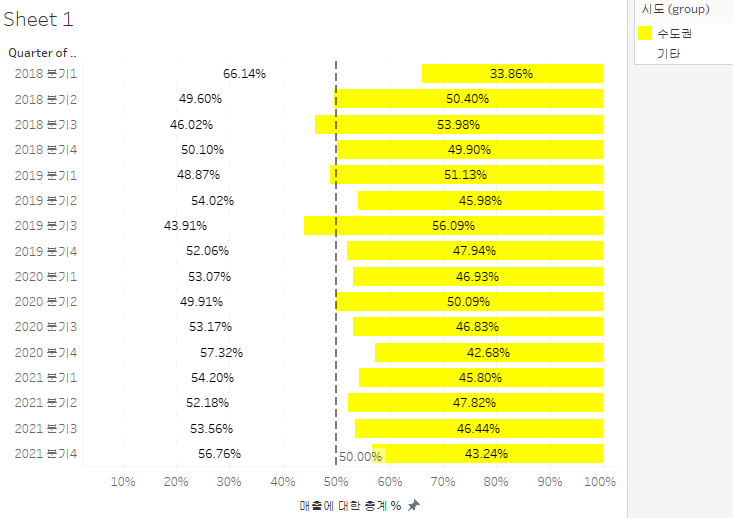
(2) 집합
- 집합에 포함되는지 아닌지 (그룹과의 차이)
- 매출 1에서 10위, 매출 11에서 20 위 집합 생성
- 데이터 정렬
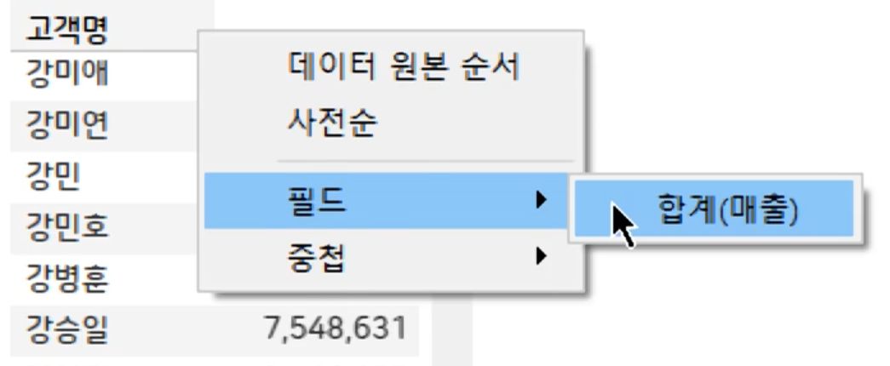
- 고객명 우클릭 후 집합 생성
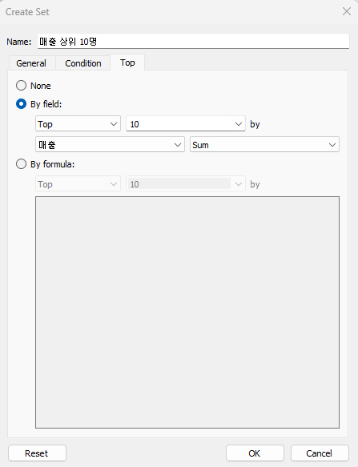
- 같은 방식으로 상위 20명 생성
- 그 후 행 선반에 매출 상위 10,20명 필드를 드래그
(3) 결합된 집합
- 이번엔 상위 11에서 20위 생성
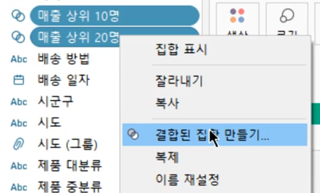
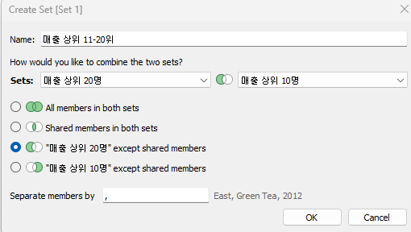
- 11위에서 20위를 행에 드래그
- 그 후 마크 위에 필터란에 넣어서 in을 선택 후 확인
- 만든집합을 폴더로 관리 (이 방법을 내가 많이 쓸듯)
step1. 폴더별 그룹화 선택
step2. 넣고 싶은 필드 선택 후 우클릭 \(\to\) create folder
Summary
그룹은 항목들을 여러 그룹으로 묶을 수 있지만 집합은 포함되는지 아닌지로만 구분
5. 계층과 총계
(1) 계층 만들기
- 계층은 Drill-down해서 값을 세부적으로 찾는데 유용. 특히 지역 데이터(맵에서 표현할때) 계층을 만들어 놓지 않으면 동일한 시군구명으로 인해 에러가 발생할 수도 있으니 미리 상위레벨과 하위레벨에 대한계층(hierarchy)를 만들어 주는것이 중요
example
- 제품대분류와 제품중분류를 선택후 우클릭한 후에 계층만들기!! 이름은 제품 분류
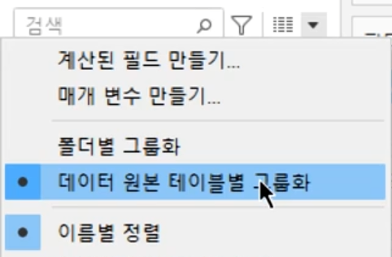
- 워크시트 새로만든 후 제품 코드를 드래그하여 행 선반에 추가 다음 메시지가 나오면 Add all members 클릭
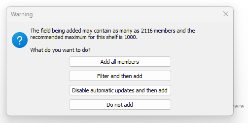
- 살펴보니 제품명에 앞부분은 제조사임, 변환해주자
- 제품명 우클릭 후 transform 후 다음과 같이 공백을 구분자로 설정 후 확인
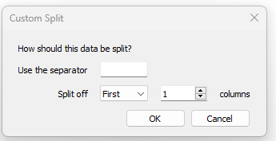
- 그 후 만들어진 계층에 넣어주면 끝!
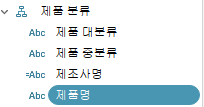
(2) 층계 만들기
- 총계(total)는 각각의 요소들의 TOTAL 을 보여주는 방식으로 범위에 따라 총합계및 소계, 그리고열과행 기준으로 각각 TOTAL을 표시 할 수 있다.
- 또한 TOTAL은 기본적으로는 하단과 우측에 배치가 되는데항목이 많아질 경우 TOTAL이 바로시각적으로 드러나지 않을 수 있다. 이럴 때는 분석 메뉴에서 총계 에 대한 행과 열 표시의 위치를 변경하면 된다.
example
- 지역 행, 매출을 마크에 넣어줌
- 그 후 분석 패널에서 total을 열 방향 총합으로 드래그 드랍!
- 이번엔 행 선반에 시도 추가! 그러면 이제 지역별 총합은 표시가 안되는데 분석패널에서 total을 subtotals로 넣어주면 된다. (시군구도 이와 같은 방식으로!)
- 주문일자를 열선반에 추가! \(\to\) 연도별 시군구 매출액을 파악할 수 있다. (분석 패널에서 행 방향 총계도 종합가능)
- 근데 이렇게 하다 보니 먼가 열 총합은 현재 밑으로 한참 내려야 하고 분기까지 열에 추가하면 더 복잡해질 것임
- 다음과 같은 방법으로 해결 가능
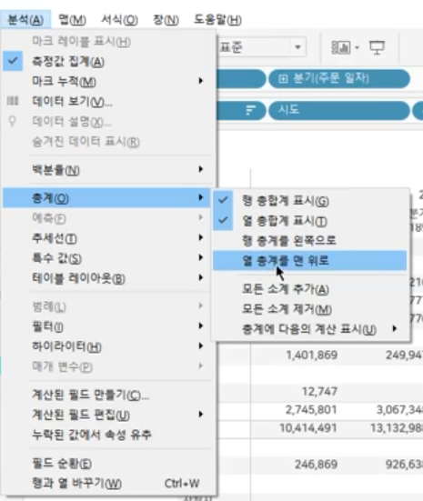
Summary
- 계층은 화면에서 Drill-Down해서 값을 세부적으로 찾는데 유용
- 총계는 각각의 요소들의 Total을 보여주는 방식으로 범위에 따라 총 합계 및 소계, 그리고 열과 행 기준으로 가각 Total을 표시할 수 있음
6. 맵 만들기
(1) 지리적 역할 부여하기
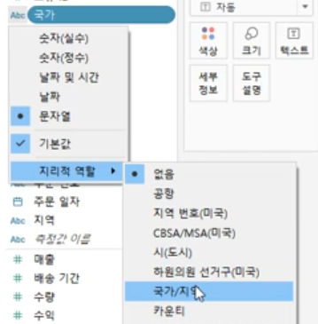
- 측정값에 없던 경도와 위도 추가, 그리고 문자열이 아닌 지구본 모양으로 표시됨
- 그 후 국가를 더블 클릭하면!
- 시도 기준으로 표현, 똑같이 지리적 역할 선택후 state/province 선택, 그리고 더블클릭
- 시군구도 선택만 country로 하고 동일!
- 시군구의 경우 7개의 불확실한 지역이 있는데 이건 시도별 동일한 이름을 가진 지역이 있어서 그럼
- 따라서 계층형 구조를 만들어야 한다. 시군구 필드를 시도로 드래그!
- 그 후 시군구를 더블 클릭하면 unknown이 사라짐!
- 지역의 경우 시도보다 상위 개념이다. 따라서 지리적 역할을 만들 때 create from 시도를 이용해서 만든 후 지도 계층에서 시도 위에 넣어주자
(2) 맵 차트 구현하기
- 시군구 기준으로 수익을 맵에 표현
- 매출은 사이즈, 수익은 색상으로 표현
- filter값으로 특정 시도만 보는 것도 가능!
- 또한, 마커를 맵으로 표시하면 아래와 같이도 표현이 가능하다.
- 근데 다른 나라도 표시되는 것 같음
background 기능
- 최상단 메뉴바에서 map, backgroud layer 클릭! \(\to\) 다양한 메뉴가 있으니 한번씩 수행해보자!
- 우리나라 빼고 전부 없애기 \(\to\) washout(투명도)를 100%로 바꾸기
Summary
- 태블로에서는 맵 형태로 데이터를 표현할 수 있다.
- 우리나라 지리 정보가 있다면 기본적으로는 시도와 시군구명만 있더라도 태블로에서 맵 형태로 표현이 가능
- 그 외에 읍면동이라든지 지점 위치를 표현하고 싶다면 위도와 경도값을 가지고 있거나, 별도의 공간 파일(shp)파일과 조인해서 표현 가능.
Quiz
(1) 다음 중 부분 전체 분석에 적합한 차트 유형이 아닌 것을 고르시오
파이 차트
누적 막대 차트
채워진 버블 차트
트리맵
도넛 차트
정답 : 채워진 버블 차트
(2) 다음 중 파이 차트 두 개로 도넛 차트를 만들 때 활용하는 기능을 고르시오
측정값 결합
이중 축
축 편집
결합된 축
정답 : 이중 축
(3) 분산형 차트를 만드는 경우 측정값은 최소 몇 개 이상 있어야 하는가
- 2
- 0
- 4
- 3
- 1
정답 : 2
(4) 다음 중 결합된 축과 관련된 내용을 고르시오
태블로에서 삼중축 적용이 가능함
마크를 서로 다르게 구성 가능함
영어로 Dual Axis라고 함
마크는 반드시 동일하게 구성됨
정답 :마크는 반드시 동일하게 구성됨
(5) 다음 중 그룹을 만드는 방법으로 적절한 것을 고르시오
선반에서 아래 세모 옵션 선택
데이터 패널에 있는 임의의 차원에서 마우스 우클릭
표현 방식에서 원 뷰 클릭
사이드바에 있는 분석 패널에서 선택
정답 : 데이터 패널에 있는 임의의 차원에서 마우스 우클릭
(6) 다음 중 집합에 대한 설명으로 맞는 것을 고르시오
하나의 차원에서 IN, OUT, OTHER 3개로 만들 수 있음
집합을 만들면 필드 유형 아이콘은 Abc로 표시됨
두 개의 집합을 결합된 집합으로 만들 수 있음
집합을 필터로 적용할 때 OUT으로 설정함
정답 : 두 개의 집합을 결합된 집합으로 만들 수 있음
(7) 다음 중 자동적으로 계층이 설정되어 있는 데이터 유형을 고르시오
부울
정수
지리적 역할
문자열
날짜
정답 : 날짜
(8) 다음 중 총계 기능을 사용할 수 있는 영역을 모두 고르시오
표현 방식
분석 메뉴
워크 시트 메뉴
분석 패널
맵 메뉴
정답 : 분석 메뉴, 분석 패널
(9) 다음 중 지리적 역할로 변경할 경우 맞는 설명을 모두 고르시오
데이터 원본에 위도와 경도가 없다면 맵으로 표현 불가능
지리적 역할로 변경할 경우 차원에 우클릭 후 ’변환’을 선택함
같은 지역명을 맵에서 제대로 보여주기 위해서는 계층을 만드는 것이 좋음
우리나라 기준 ’시도’는 ’시(도시)’로 변환
우리나라 기준 ’시군구’는 ’카운티’로 변환
정답 : 같은 지역명을 맵에서 제대로 보여주기 위해서는 계층을 만드는 것이 좋음, 우리나라 기준 ’시군구’는 ’카운티’로 변환
(10) 다음 중 태블로에서 맵을 표현할 수 있는 방법 중 틀린 표현을 찾으시오
위도와 경도 값이 있으면 맵 표현이 가능함
한 번 설정된 배경 맵은 변경할 수 없음
맵의 계층은 여려 개의 계층(layer)으로 이루어져 있음
지리적 역할로 변경한 차원 필드를 더블 클릭하면 맵 형태로 표현됨
정답 : 한 번 설정된 배경 맵은 변경할 수 없음